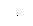

Additional Information on Arbitrary Waveforms
· As a shortcut to determine which arbitrary waveform is selected, press. A temporary message is displayed on the front panel.· In addition to creating a new arbitrary waveform from the front panel, you can also edit any existing user-defined waveforms. You can edit waveforms that were created either from the front panel or from the remote interface. However, you cannot edit any of the five built-in arbitrary waveforms.· Press the Edit Wform softkey to edit any of the arbitrary waveforms stored in non-volatile memory or the waveform currently stored in volatile memory. While editing an existing waveform, please note the following interactions.· If you increase the cycle period, some points could potentially match existing points. The waveform editor will preserve the earliest points and remove all duplicates.· If you decrease the cycle period, the waveform editor will remove all points that were previously defined beyond the new period.· If you increase the voltage limits, there will be no change in the voltage levels of any existing points but there may be some loss of vertical resolution.· If you decrease the voltage limits, some of the existing points could potentially exceed the new limits. The waveform editor will reduce the voltage levels of such points to equal the new limits.· If you select an arbitrary waveform as the modulating waveshape for AM or FM, the waveform is automatically limited to 8K points. Extra waveform points are removed using decimation.